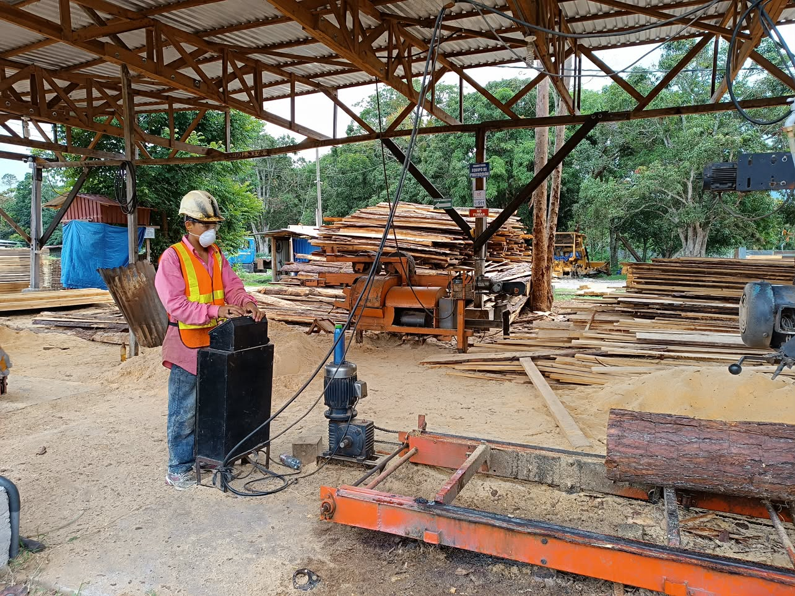
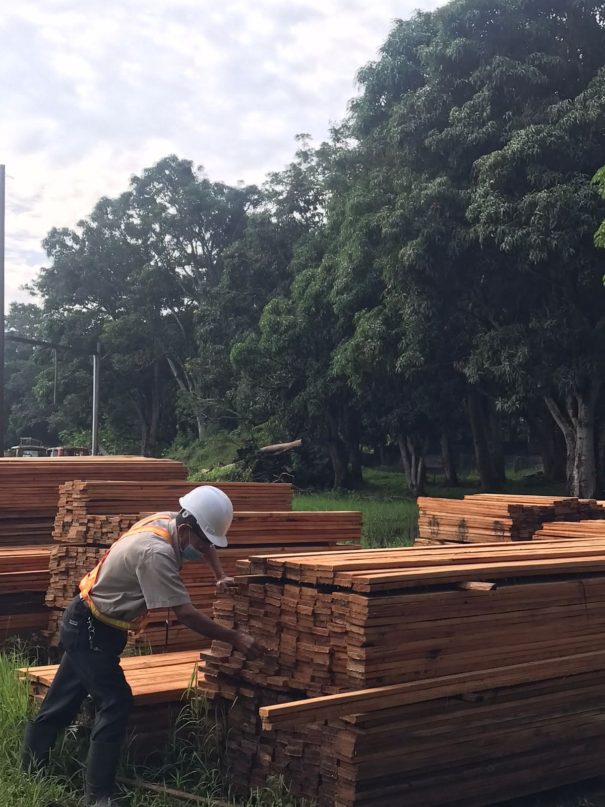

▣
Venta de madera aserrada y pedidos por medidas
Madera clasificada y cortes personalizados para construcción, carpintería, muebles y proyectos especiales.
Ver productos
Atendemos proyectos de construcción, transformación forestal y transporte con experiencia, maquinaria y madera seleccionada.
Coordinamos cada pedido según el tipo de madera, volumen, medidas y destino. Nuestro equipo le acompaña para elegir la solución correcta.


Madera clasificada y cortes personalizados para construcción, carpintería, muebles y proyectos especiales.
Ver productosMadera en rollo para aprovechamientos, transformación y necesidades industriales en distintos volúmenes.
Solicitar informaciónAserrín limpio para usos productivos, agrícolas, energéticos y de manejo de residuos forestales.
Consultar disponibilidadMaquinaria disponible para apoyar trabajos de aprovechamiento y manejo forestal con coordinación previa.
Coordinar alquilerTransporte confiable para madera, maquinaria, materiales y carga general hasta su destino.
Coordinar flete

Indique producto, volumen, medidas, maquinaria o destino.
Confirmamos disponibilidad, tiempos y condiciones del servicio.
Clasificamos, medimos y coordinamos la carga correspondiente.
Realizamos el despacho, flete o servicio acordado.